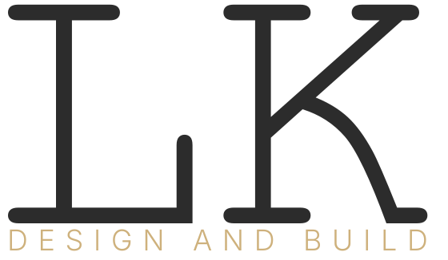

Every file here has the type converted to outlines, so it needs no fonts installed and cannot substitute them. Download and send these as they are. Do not screenshot the logo or scale an image up.
Vector. Sharp at any size, from a business card to a billboard. Send this to printers, signwriters and embroiderers.
One colour, fully solid, no background. Both processes need this: the standard gold sits at 90% opacity and a printer cannot print 90% of an ink.
Transparent PNG, 4000 px wide. 342 dpi across a full A3 sheet. Use when software will not accept a PDF.
Transparent PNG, 1200 px wide. Slides, social, email. Not for print.
Outlined SVG. Figma, Illustrator, websites.
The limit is the thinnest stroke in the artwork. Embroidery needs about 0.8 mm to hold a stitch; screen print holds about 0.3 mm.
| Lockup | Embroidery | Screen print |
|---|---|---|
| Stacked | 183 mm wide | 69 mm wide |
| Horizontal | 145 mm | 54 mm |
| LK mark only | 49 mm | 18 mm |
An embroidered left chest is 80 to 90 mm wide, so it has to be the LK mark on its own: the full lockup needs 145 mm before DESIGN AND BUILD will stitch cleanly. The back of a hoodie at 250 to 300 mm takes the full lockup comfortably. A screen-printed left chest is fine at full lockup, because ink holds far finer detail than a needle does.
Ask for a thread or ink match to Pantone 465 C for the gold, and ask for a sew-out or proof before the full run.